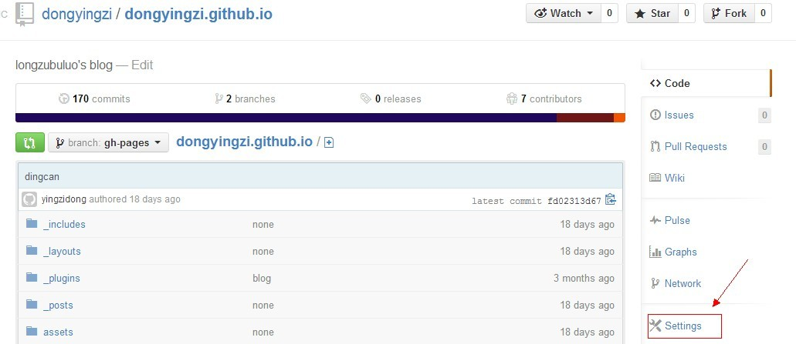
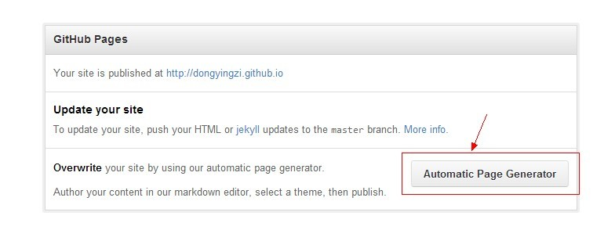

github set up blog
free blog hosting
Created by yingzidong / @longzubuluo
第一步创建博客
- 创建github帐号
- 创建github库 库名为：用户名.github.io
- 设置博客引导
库设置

自动生成

选择模板并发布

官方帮助文档
官方帮助文档第二步github客户端使用
windows 下的git bash使用
1、检查SSH keys的设置
首先我们需要检查你电脑上现有的ssh key：
$ cd ~/.ssh2、生成新的SSH Key：
输入下面的代码，就可以生成新的key文件，我们只需要默认设置就好，所以当需要输入文件名的时候，回车就好。
$ ssh-keygen -t rsa -C "邮件地址@youremail.com"
Generating public/private rsa key pair.
Enter file in which to save the key (/Users/your_user_directory/.ssh/id_rsa):<回车就好>然后系统会要你输入加密串（Passphrase）：
Enter passphrase (empty for no passphrase):<输入加密串>
Enter same passphrase again:<再次输入加密串>3、添加SSH Key到GitHub：
在本机设置SSH Key之后，需要添加到GitHub上，以完成SSH链接的设置。
用文本编辑工具打开id_rsa.pub文件，如果看不到这个文件，你需要设置显示隐藏文件。准确的复制这个文件的内容，才能保证设置的成功。
在GitHub的主页上点击设置按钮：
选择SSH Keys项，把复制的内容粘贴进去，然后点击Add Key按钮即可.
4、测试一下
可以输入下面的命令，看看设置是否成功，git@github.com的部分不要修改：
$ ssh -T git@github.com